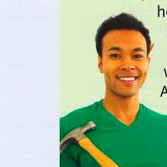
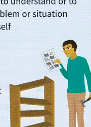
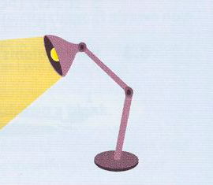

Dealing with problems
Trying to solve a problem
Rafael needed a bookcase. He had been making do1 with planks of wood on bricks, but he wanted something nicer now. His sister, Ana, suggested buying a self-assembly bookcase where the pieces came in a flat pack for him to put together himself. Rafael knew he wasn't much good at that sort of thing, but he decided to give it a shot/whirl2. When he opened the pack, it all looked very confusing, but he was determined to get to grips with3 it.

After a couple of hours, he had something that looked a bit like a bookcase but was rather wobbly. To be on the safe side4, he asked Ana to check it for him. 'There's something not quite right about this,' she said. 'I think we'd better get to the bottom of5 it before you put your books on it.'
Light and understanding

The recent release of fifty-year-old documents has shed a great deal of light on the political crises of the 1950s. Some unexpected information about the government of the day has been brought to light and some surprising facts about the politicians of the time have also come to light.
The concept of light is often used to represent mental illumination or understanding. The idiom bring something to light (usually used in the passive – see above) means to discover facts that were previously unknown. Often, though not always, these facts are about something bad or illegal. Come to light gives a similar idea of unknown facts becoming known. Shed/Throw light on something means to help people understand a situation.
It's been a very difficult year, but at last I feel I can see the light at the end of the tunnel. [something makes you believe that a difficult and unpleasant situation is coming to an end]
The problem's over
The Democratic Party is behaving as if victory was already in the bag. [certain to be achieved (informal)]
I was in despair until Chris turned up – the answer to my prayers. [something or someone that you have needed for a long time]
I want to wave a magic wand and make things better. [find an easy way to solve a problem]
I've got to tie up a few loose ends before I go on holiday. [deal with the last few things that need to be done before something is completed]
Once Sara explains why she acted as she did, everything will fall into place. [be understood or go well]
After the flood, it took us some time to pick up the pieces. [try to return to normal]